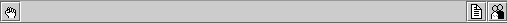

In case that a floating exception or synchronization error occurs at run-time an indicator lights up for a while and than memorizes the signal . The indicator can be reset by clicking on it. Synchronization errors are signalled when the systems audio buffers are over or under flowing due to heavy computation load or external synchronization problems.
When the signal computation is enabled the signal objects (by convention having a name ending with ~) are activated. The signal connections are marked as active . The key shortcut control-<space bar> permits to toggle the state of the signal computation engine (activate/desactivate) at any time.
The control panel can be detached from the console window by dragging its handle at the left border out of the console window.
One can print out messages and data to the console window using the object print.
The jMax patcher window is at the same time the graphical patch editor and an interface for controlling a program (patch) using some graphical controllers like sliders. It distinguishes modes edit and lock.
In lock mode the toolbar shows only the button to toggle between
the modes  (indicating the
lock mode). In this state the patcher can not be edited and the graphic
display is optimized for real-time performance.
(indicating the
lock mode). In this state the patcher can not be edited and the graphic
display is optimized for real-time performance.

In edit mode  the
palette of the jMax objects appears in the toolbar and the patcher can
be edited.
the
palette of the jMax objects appears in the toolbar and the patcher can
be edited.

The key shortcut control-e can be used to toggle between edit and lock mode.
When the content of a patcher changes, the save button  appears on the right of the toolbar. It disappears when the patcher is
saved (via the Files menu or by clicking the save button).
appears on the right of the toolbar. It disappears when the patcher is
saved (via the Files menu or by clicking the save button).
Patchers inside a patcher (sub-patchers) have an additional button
 on the right of the toolbar.
This button allows to focus the window of the current patchers parent patcher.
The object associated to the current patcher will appear selected inside
of its parent patcher window.
on the right of the toolbar.
This button allows to focus the window of the current patchers parent patcher.
The object associated to the current patcher will appear selected inside
of its parent patcher window.
By default the toolbar contains the following system classes:
| generic object
generic jMax object, where the class name has to be typed in |
|
| patcher object
patcher object to create a sub-patcher (or patcher inside the patcher) |
|
| inlet
inlet for a patcher or template |
|
| outlet
outlet for a patcher or template |
|
| comment box
box to add comments to the patcher |
jMax packages can add entries to the toolbar. For example the package guiobj provides the following classes which appear on the right of the system objects at the toolbar:
| message constant
expression of a single message or constant |
|
| button
button which outputs a bang message when pressed |
|
| toggle
button toggling between 0 and 1 when pressed |
|
| slider
slider outputting integers |
|
| integer box
display and input integer values |
|
| float box
display and input float values |
|
| display field
generic display field |
|
| vector scroll
scrolling graphic display for vectors and numbers |
|
| oscilloscope
graphical signal display |
(Refer to help patches for further information about the objects.)
Objects can be selected by clicking over them (mouse left button) or dragging a selection rectangle over them (left mouse button pressed inside the window and drag). The selection can be extended by holding the shift-key. A number of manipulations can be applied either to a single object or to a selection of objects:
Objects can be deleted by using the delete-key or the cut functions. The edit menu provides the usual functions for cut, copy and paste with the usual shortcuts.
Objects can be moved by dragging or using the arrow-keys (speed up moving by holding the shift-key).
Objects can be resized by dragging their right border or using the plus-key "+" and minus-key "-" (speed up resizing by holding the shift-key).
A selection of objects can be aligned to the left, right, top, and bottom most border, by using the control-key plus the respective arrow-key.
Additional manipulations can by applied to a single object via a contextual pop-up menu (right mouse button). The possible manipulations depend on the type of object.
Note that there is no undo function implemented yet.
Adding a connection is done by clicking to its origin and then to its target (both from outlet to inlet and from inlet to outlet). Alternatively, a connection can be dragged from the origin to the target (it is created when releasing left mouse button). By holding the shift-key multiple targets can be connected to the same origin (inlet or outlet).
A connection can be selected (by clicking on it) and deleted with the cut edit function or the delete-key. The contextual pop-up menu (right mouse button) of an inlet or outlet allows to delete all its connections.
The object description typed inside an object is automatically reformatted by jMax. Only the comment object can contain text of an arbitrary formatting. Text can be cut, copied, and pasted from one object to another.
The edit menu provides a "Find" function to search for symbols in text objects. All objects containing a given symbol will be listed in the find panel. By clicking to an entry of the object list, the window of the objects patcher will be opened and the object will appear selected.
An invalid object which can not be correctly instantiated because of an invalid description or the current system setup appears grey. An error description for each invalid object can be obtained by the key shortcut control-z. The edit menu provides a "Find Errors" function to obtain a list of invalid objects.
Objects containing text have some special functions, which are accessible via the text menu of the patcher window and the contextual pop-up menu (right mouse button) of the objects. In this way font, style and size can be adjusted for each object separately.
The function "Fit to text" in the Text menu of the patcher window automatically adapts the object size to its description.
Some graphical properties of the controllers can be set via a contextual pop-up menu (right mouse button) of the object. For example, in this way one can change the colour of a button or the range of a slider.
The first value typed to the patcher object (a symbol) is it's name.
Double clicking on the patcher object opens another patcher window where
the content of the patcher can be edited. Inlet  and outlet objects can be added
inside the patcher window, each one corresponding to an inlet or an outlet
of the patcher object.
and outlet objects can be added
inside the patcher window, each one corresponding to an inlet or an outlet
of the patcher object.
The inlets and outlets of a patcher are numbered, starting from 0. The given number associates the inlet or outlet object inside the patcher window to the inlet or outlet of the patcher object. A patcher may contain several inlet or outlet objects) of the same number. Inlets objects of the same number receive from the same inlet of the patcher object (in undefined order). Outlet objects of the same number send messages to the same outlet of the patcher object.
The help menu gives also access to the summary patches of the loaded
packages, examples and tutorials.
|
Copyright © 1995,1999 IRCAM. All rights reserved. |